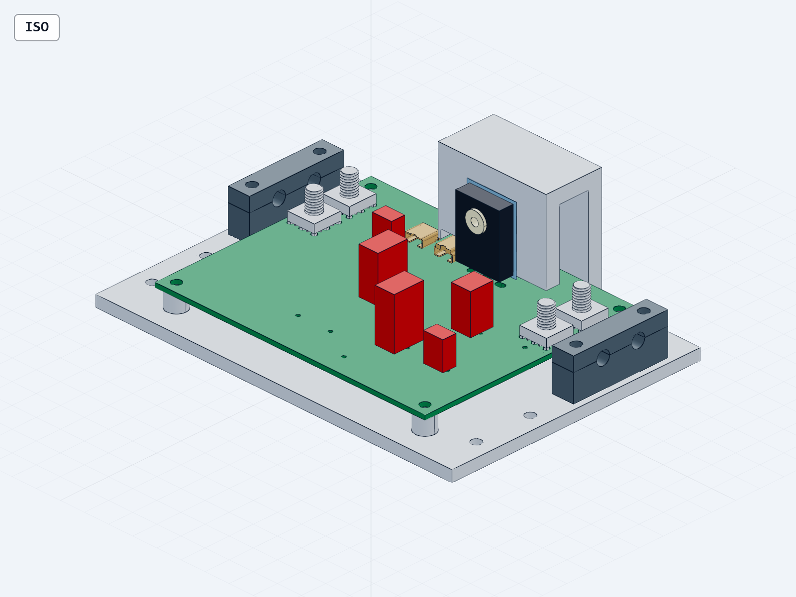
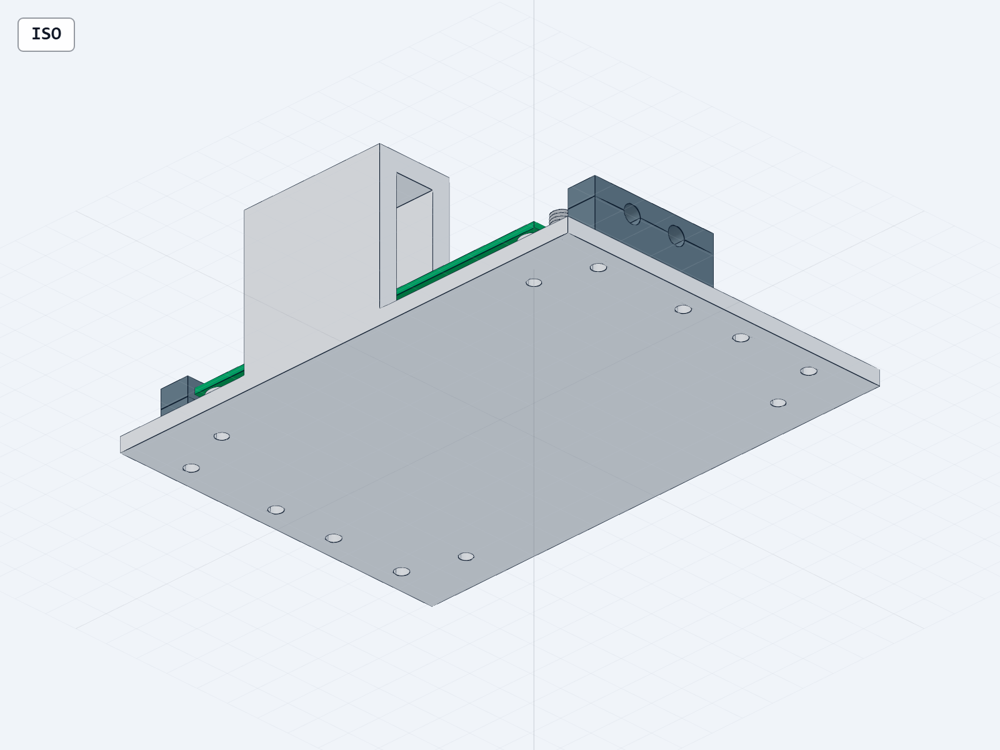
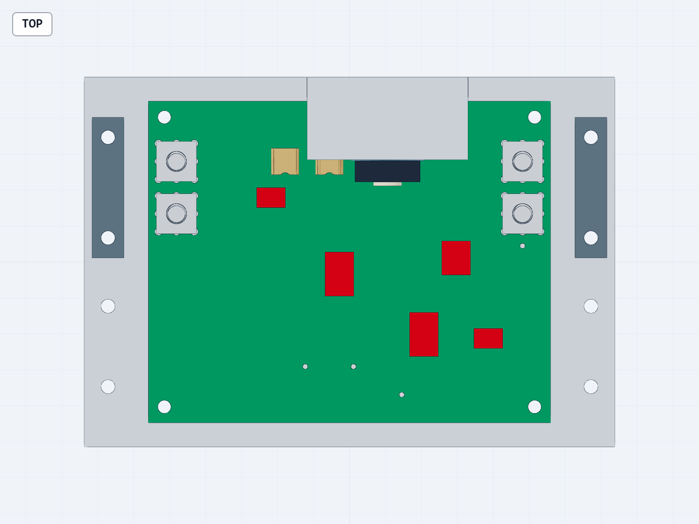
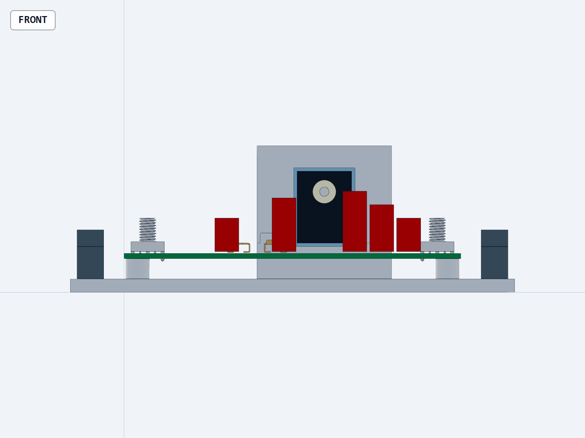

WP10 · V29 · 2026-09-10T19:13:37.336834+09:00
四个实物端子与载板退让口已落地
整机尚不能完全交付。 本轮源文件、PCB与局部STEP已同步；CHB连续热工况仍超温，整舱安装位置未接纳。
打开交互CAD · 下载STEP · 下载增量交付包 · 完整说明与复现入口
211 / 677位号 / 针脚网络记录；原207 / 673保持
24局部有效实体；20个实例，仍有23个位号未建模
ERC 0 / 0错误 / 警告
DRC 4Kelvin分离焊盘未连接；其余错误/警告0

具体修改与验收范围
- J204–J207采用74651195R原厂九针封装和STEP，端子铜环与双面铜线连通。
- F201右移2mm避开端子钻孔；D202左移2mm并重新布置钳位线；回流走廊改至x18/82。
- 原厂模型偏移+0.5mm后不再插入PCB。R202原厂实体旧交叠16.3145mm³→0，最大包络距改件1.0mm。
- 电气15项、针对性几何6项、数值6项检查通过；假接线、错pad和同数量错DRC反例被拒绝。
全模块拓扑/闭合/方向检查通过；整模块布尔自交检查240秒超时未计通过。改动的载板与PCB另做完整自交检查，两件通过。源文件与旧37行闭环表保留可追溯关系，没有给未安装模块增加整星实例数。
连续热工况仍不满足
既有10mΩ线束/接点分配只改变热量位置，不重复加阻。V28加厚板、示例环境及未实现的+Y连接边界保持。
| 既有损耗分到本板 | 本板热耗 W | CHB壳温 °C | 105°C裕度 |
|---|
| 0% | 18.538 | 106.233 | -1.233 |
| 25% | 19.334 | 106.581 | -1.581 |
| 50% | 20.130 | 106.927 | -1.927 |
| 100% | 21.723 | 107.615 | -2.615 |
所有情景仍超温；没有通过连续运行、飞行或制造放行。
实件条件与剩余工作
原厂85A额定条件不能替代整板与线耳载流温升验证。线耳、螺母、绝缘罩、抗扭支撑、焊接工艺和成品板厚仍须绑定；九针是同一个电极。
继续补全板上23个位号实体与紧固件、压缩载板/热支撑并收敛舱内位置。Q201低损候选尚未替换，需要热态SOA与驱动验证。推进同修订受控ICD、整机逐关节质量惯量仍未绑定。
Q201候选核验记录 · 电气BOM · 针脚网络 · 原生PCB SVG



STEP可供SolidWorks导入；未生成原生SLDASM/SLDPRT。增量包依赖既有WP10基线。旧联合包40文件原哈希保持，当前可用内存2684.4MiB。